2.Informe de investigación
Este obra está bajo una licencia de Creative Commons Reconocimiento-NoComercial-CompartirIgual 4.0 Internacional.
Para saber más, visita la sección Licencia
1. Título de la investigación
“Análisis de la influencia de las herramientas open source en el proceso de aprendizaje en la educación formal”
2. Introducción
La educación, al igual que todo en pleno siglo XXI, avanza a gran velocidad, aunque con pequeños desfases. Uno de estos desfases es la incorporación del avance en las nuevas tecnologías al aula por un motivo u otro.
Algunos de los motivos por los que las nuevas tecnologías no se han incorporado pueden ser: el miedo al uso de nuevas herramientas, el elevado coste de estas o que los docentes no aceptan el valor didáctico de las nuevas herramientas educativas.
Por un lado, cuando hablamos del coste, nos referimos al elevado coste que suponen las tecnologías que se han aplicado a la educación en los últimos diez años, es decir, la electrónica, la robótica o la impresión en 3D.
Por otro lado, uno de los principales problemas es la falta de evaluación externa sobre la eficiencia de los diferentes métodos de trabajo en el aula y como favorecen el aprendizaje. (XARXATIC, s.f.) (Martí, 2013) Finalmente, uno de los principales problemas es la lenta adaptación de los profesores con el uso de estas herramientas, ya que no aprenden a usar una cuando han surgido otras tantas más y como señalaba Fandos (2006) el sistema de enseñanza tradicional también tiene tres problemas graves; geográficos, temporales y de demanda-, en el desarrollo, con la aparición e introducción de las NNTT en los centros docentes.
El problema cobra relevancia al apreciar que los alumnos tienen relación con las nuevas tecnologías, pero desconocen sus utilidades. Mencionando por otro lado, el enriquecimiento del aprendizaje que se desprecia por no usar dichas herramientas.
Determinación de la influencia del uso de nuevas tecnologías y herramientas open source en el aprendizaje en el ámbito de la educación infantil, primaria, secundaria y universitaria.
Determinar las causas que originan el miedo a usar nuevas tecnologías y en concreto las herramientas educativas open source.
Identificar la relación entre el aprendizaje y el uso de herramientas educativas open source.
Identificar la influencia de herramientas open source de diseño propio en el aprendizaje en la educación formal.
Esta investigación surge por la necesidad de ampliar las herramientas educativas existentes, y a su vez para fomentar el uso de otras herramientas que actualmente están en desuso por miedo a las mismas.
Se pretende demostrar que el uso de las nuevas tecnologías y en concreto de las herramientas educativas open source y el material elaborado por el movimiento maker influye positivamente en la adquisición de las competencias claves y que además mejoran el aprendizaje.
Por otro lado, uno de los principales aportes de esta investigación es la creación de nuevas herramientas educativas, la documentación y la divulgación de varios proyectos open source que pueden ser implementados en el ámbito educativo.
Esta investigación está orientada a mejorar tanto la calidad de la educación, como el desarrollo personal de los propios alumnos, sin restarle importancia a la mejora de los métodos con los que trabajan los docentes.
3. Análisis e interpretación de la información
Hemos analizado algunos de los hábitos y conocimientos sobre las nuevas tecnologías que presentan las familias de los estudiantes que han participado en la investigación.
De 750 encuestados de forma aleatoria, el 57% eran mujeres[Gráfica 1] y la mayoría de ellos se encuentran entorno a los 30-50 años[Gráfica 2].
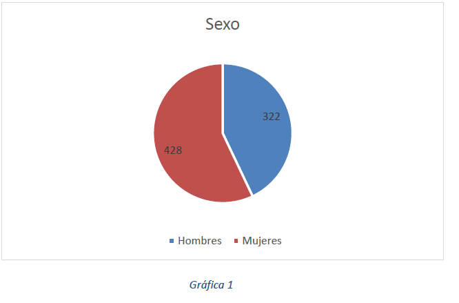El 97% de las familias tienen videoconsolas en casa y cuando se les pregunta el número de horas qué sus hijos juegan al día el 58,9% se limita a no responder[Gráfica 3].
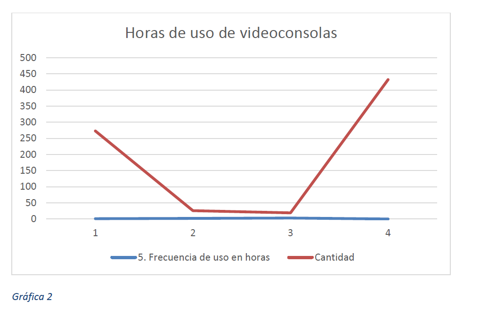Del 97% de familias con videoconsolas, solo el 31% reconoce que sus hijos juegan a juegos educativos.
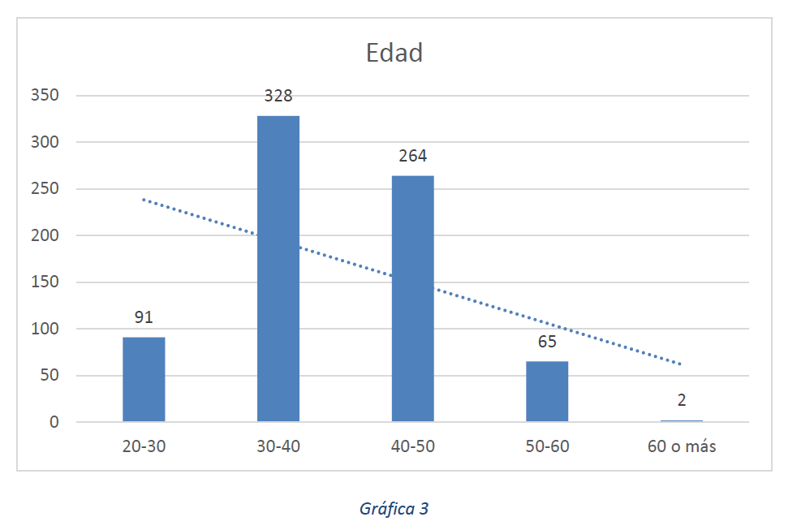En cuanto al uso de otros dispositivos, conocemos que el 92,4% de las familias disponen de algún ordenador, siendo los mayores de 60 años los que no disponen de ellos y, el conocimiento de programas educativos para ordenador es considerable, siendo la gran mayoría (57%) de ellos conocedores de programas como Scratch, AppInventor, JClic o GeoGebra. [Gráfica 4]
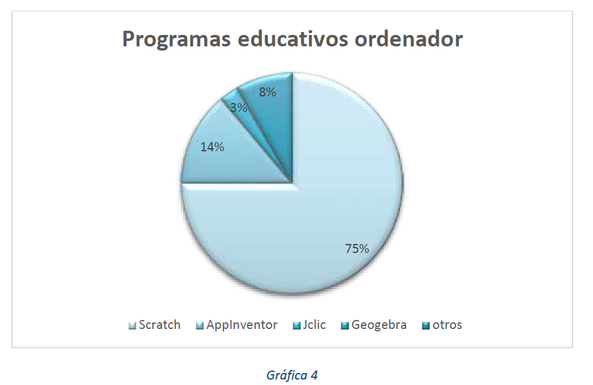El 56% de los familiares encuestados conoce las influencias de las nuevas tecnologías en los niños y, de ellos, el 52% cree que no es favorable que los niños estén en contacto con las nuevas tecnologías, pensando un 21% que el uso de las nuevas tecnologías puede influir negativamente en el aprendizaje.
El 43,7% de los encuestados, conocen la robótica educativa, pero solo el 1,6% de ellos disponen de material educativo relacionado con la robótica (robots, kits educativos, etc.…) y el 56% se muestra favorable a la compra de herramientas basadas en las nuevas tecnologías, siendo el gasto económico fijado entre los 20-50€ el que predomina. [Gráfica 5]
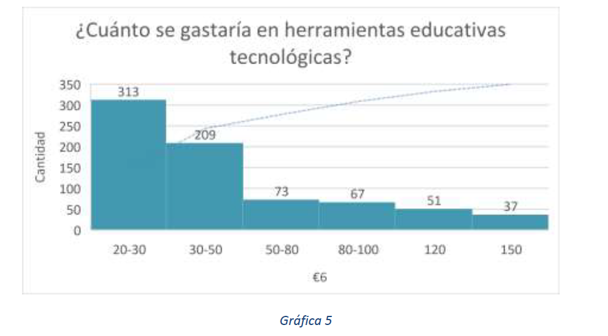 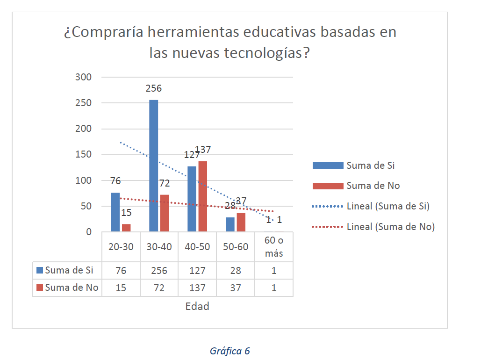Como podemos ver en la gráfica 6, la tendencia de las intenciones de comprar herramientas educativas basadas en las nuevas tecnologías es positiva a menor edad, siendo una tendencia estabilizada en cuanto a la no adquisición de estas herramientas.
También hemos analizado algunos de los hábitos y conocimientos sobre las nuevas tecnologías que presentan 25 de los profesores y maestros de los estudiantes que han participado en la investigación y de los cuales el 68% tienen una edad comprendida entre los 25-35ª años.[Gráfica 7]
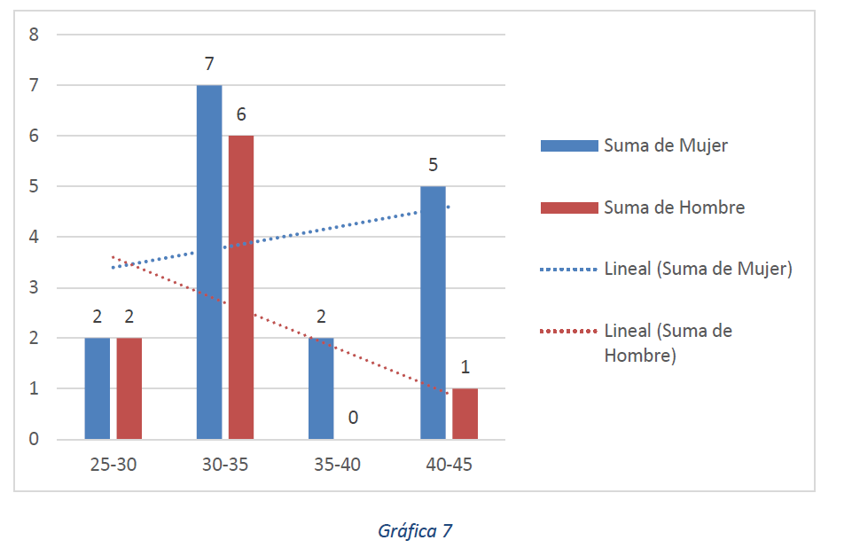El 80% de los profesores encuestados reconocen que sus alumnos están inmersos en una era tecnológica y piensan que esto se ve reflejado en sus conductas. La mayoría de ellos, conocen de qué manera influyen las nuevas tecnologías en los niños, siendo un 88% de ellos los que reconocen que las tecnologías influyen en el aprendizaje.
Sólo el 48% de ellos, conoce las técnicas apropiadas para poder favorecer el aprendizaje, siendo el 36%, los que conocen los usos educativos del ordenador.[Gráfica 8]
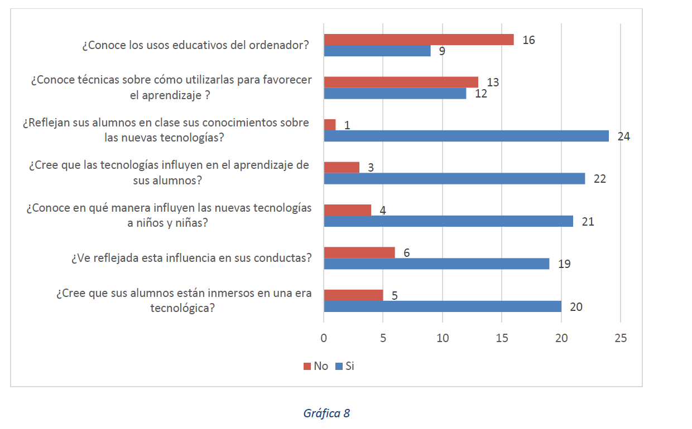La totalidad de los encuestados, creen que los profesionales de la educación deben de recibir formación específica de las TIC. Por otro lado, cabe decir que el 63% de los profesores que tienen conocimientos de robótica, electrónica o programación, lo ha aprendido mediante la autoformación.
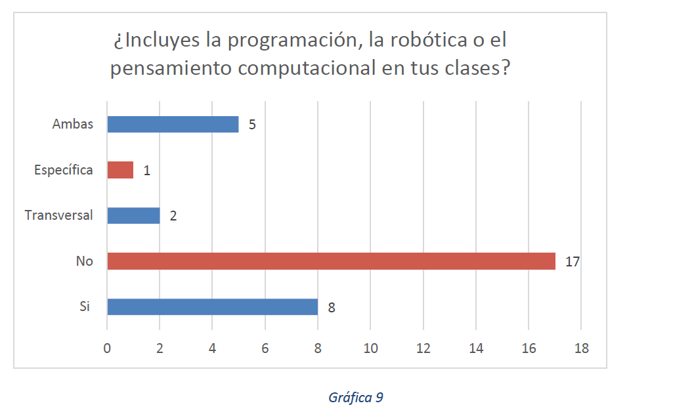Como podemos ver en la gráfica 9, solo el 32% de los profesores incluyen la programación o la robótica en el aula, haciéndolo de forma transversal y específica, predominando el uso de ambas formas.
La mayoría de los profesores que ponen en uso en sus clases la robótica o la programación tiene conocimientos de múltiples lenguajes de programación, pero en clase solo usan los más adaptados al nivel del alumnado y el material más fácil para el nivel educativo, como por ejemplo los Escornabot o las placas Arduino.[Gráfica 10]
Son los profesores con confianza en las habilidades los que realmente ponen en uso estas herramientas educativas. Como podemos ver en la gráfica 11, en una valoración sobre diez, la tendencia de confianza se sitúa entre el 5 y el 7.
Por ultimo y no menos importante, podemos mencionar que todos valoran positivamente los resultados obtenidos en sus alumnos al hacer uso de estas herramientas y metodologías, con una tendencia hacia el 10, pudiendo considerar como significativo el aprendizaje.[Gráfica 12]
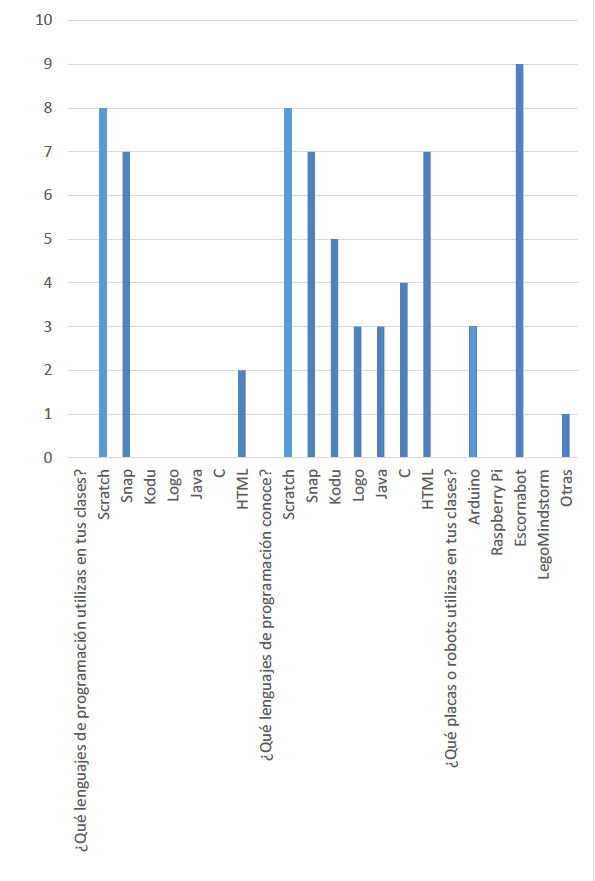 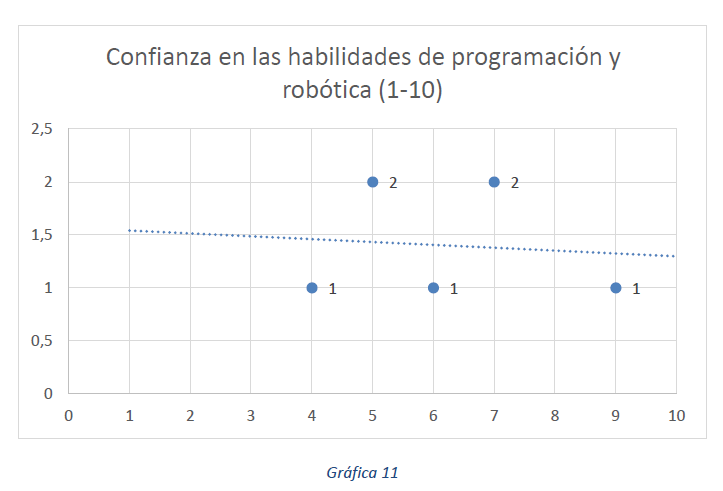 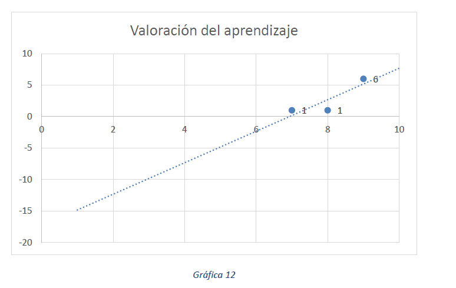También hemos analizado algunos de los hábitos y las opiniones que presentan los 1500 estudiantes que han participado en la investigación, de los cuales el 51% son niños.
Parte de esta investigación se centra en el uso de nuevas herramientas tecnológicas, y para hacer uso de estas unas de las metodologías usadas es el grupo cooperativo y el aprendizaje basado en problemas, por lo que comenzamos analizando las preferencias de los estudiantes al trabajar en grupo, y pudimos obtener como resultado que las niñas siempre son más favorables a trabajar en grupo, que los chicos.[Gráfica 13]
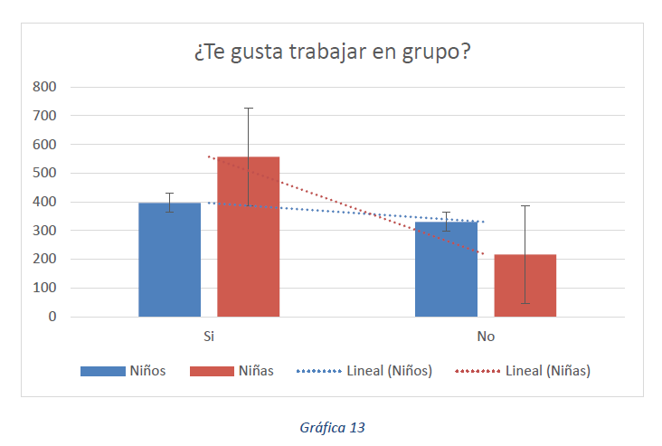Como podemos ver en la gráfica 14, la tendencia a no conocer cómo se usa correctamente las herramientas usadas, o cómo es su funcionamiento, baja considerablemente al usar herramientas open source como Escornabot, en cambio al usar herramientas visuales como Scratch podemos apreciar que también conocen significativamente su uso.
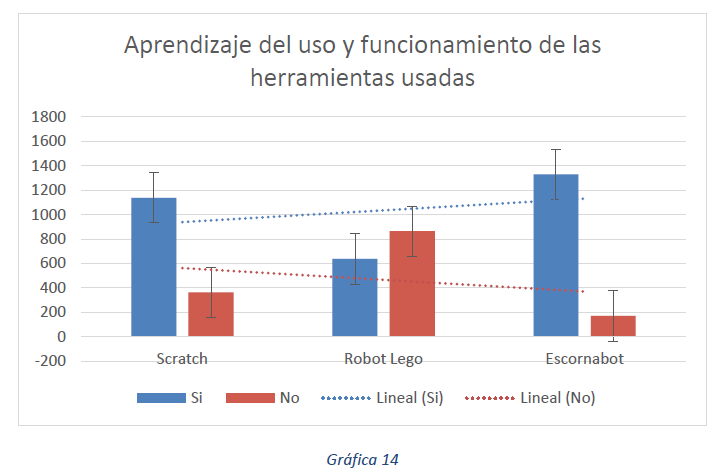El 84,1% de los encuestados reconoce que le han parecido interesantes las sesiones y les ha gustado, siendo las puntuaciones muy favorables, valorando las actividades de forma positiva y siendo el conjunto con más integrantes el de la máxima puntuación, es decir, el 10. [Gráfica 15]

Analizando la opinión que los estudiantes han tenido sobre el uso de estas herramientas educativas, podemos ver que el 75% cree que ha aprendido mejor al usar estas herramientas y solo el 12% considera que ha tenido distracción durante las actividades o algún problema. El 95,8% de los estudiantes, coinciden en que más profesores deberían de usar estas herramientas. Podemos ver que estas herramientas han tenido un impacto positivo en los alumnos y que las distracciones son mínimas ya que le prestan más atención a lo que es nuevo y desconocido.[Gráfica 16]
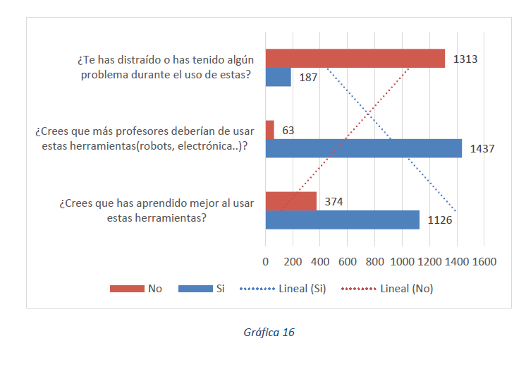Para analizar cómo influye el uso de las herramientas educativas open source hemos observado la variable dependiente al uso de estas de distintas formas. Puesto que podemos analizar el aprendizaje significativo de distintas formas.
Hemos realizado diversos cuestionarios y exámenes antes de introducir la variable independiente, es decir, antes de usar las herramientas y posteriormente, una vez usadas hemos realizado las mismas tareas para ver si la influencia en el aprendizaje es significativa.
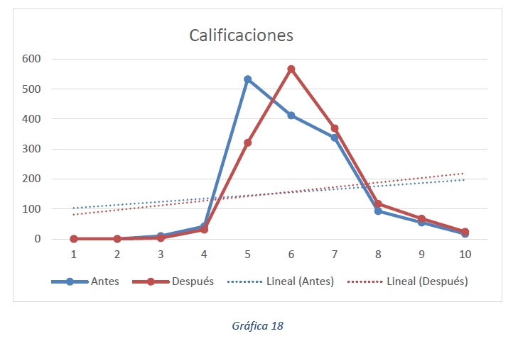En la gráfica 18 podemos ver como hay una breve mejoría en las calificaciones al usar las herramientas educativas. Después del uso, las calificaciones más altas han subido y los suspensos han descendido.
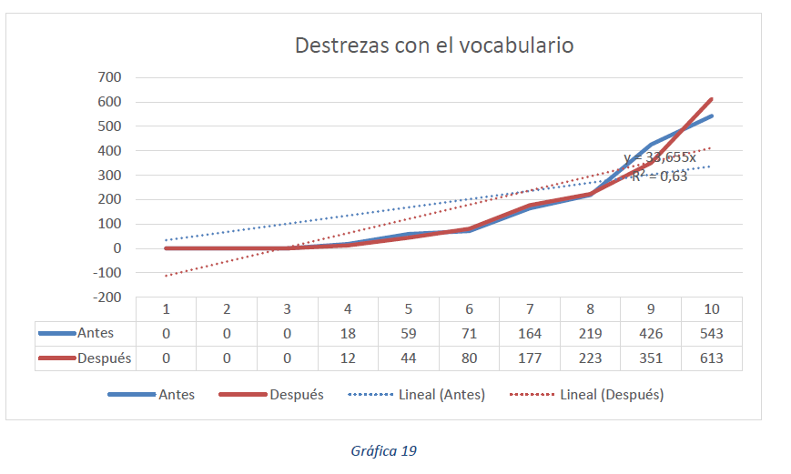Al realizar una valoración de las destrezas con el vocabulario, podemos apreciar una mejora en ellas, consiguiendo una valoración más positiva después del uso de las herramientas. Al valorar estas destrezas se ha tenido en cuenta el correcto uso del lenguaje, las expresiones usadas y los términos propios de cada materia, que se han fijado mejor, al usar dichas herramientas. [Gráfica 19]
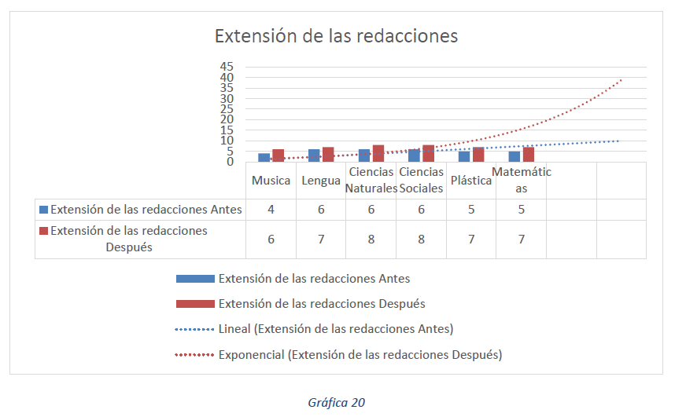Una vez explicada una determinada lección pedimos que realizaran una redacción sobre el tema. Después de explicar la lección con las herramientas usadas en la investigación, hemos podido comprobar que la extensión de las redacciones es notablemente mayor, siendo más significativas en el área de Ciencias sociales, ciencias sociales y matemáticas. [Gráfica 20]
Mediante la observación directa, hemos podido apreciar, que se presta más atención a la explicación al usar estas herramientas y que los niños no se aburren o distraen con tanta facilidad como en las clases teóricas normales en las que no se usa ninguna herramienta extra. Por otro lado, la motivación del alumnado a aprender más se ve favorecida y la curiosidad por saber del tema también, ya que realizar más cuestiones al profesor responsable de dar la clase.
Hemos observado que al usar las herramientas opensource, relacionan los conceptos de la materia en otros contextos y hacen deducciones lógicas de forma correcta.
4. Conclusiones
-La mayoría de las familias disponen de ordenador y conocen programas educativos para ordenador, pero solo son una minoría los que le dan un uso educativo.
-La robótica educativa aun es desconocida por gran parte de la población.
-Los profesores son conscientes de la era en la que se encuentran sus alumnos y reconocen la influencia de la tecnología en ellos.
-Parte de los profesores tienen miedo a usar estás herramientas por desconocimiento de las técnicas apropiadas y por no tener conocimientos suficientes.
-Los alumnos muestran más interés por las actividades al usar herramientas educativas como los robots Escornabot.
-El uso de herramientas educativas open source mejoran las calificaciones.
-Al usar estas herramientas se adquiere mejor el vocabulario, lo que repercute en una mejor expresión a la hora de escribir y permitiendo relacionar conceptos con la vida diario de los alumnos.
-El uso de las herramientas educativas open source mejora el aprendizaje.